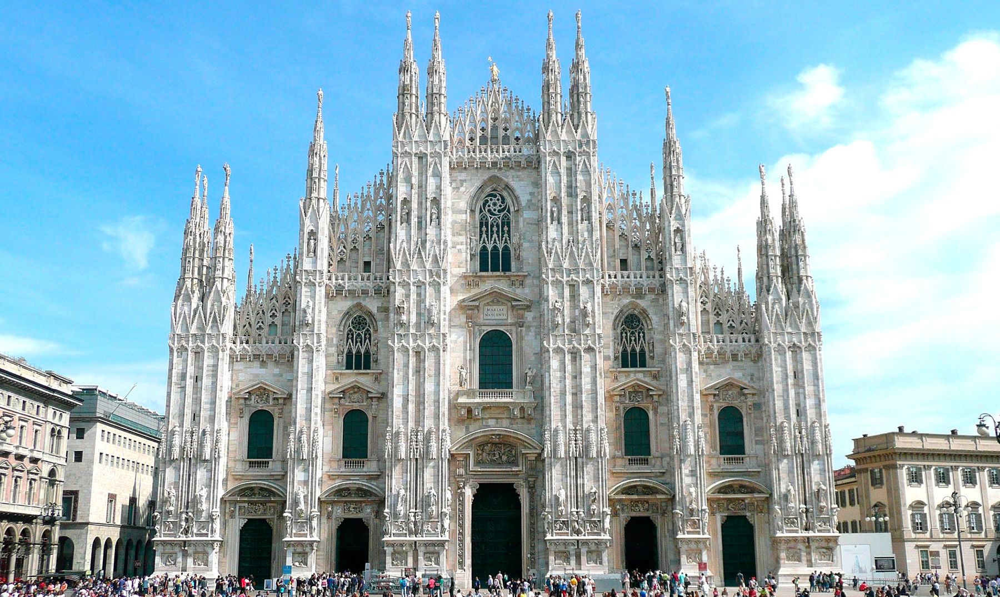
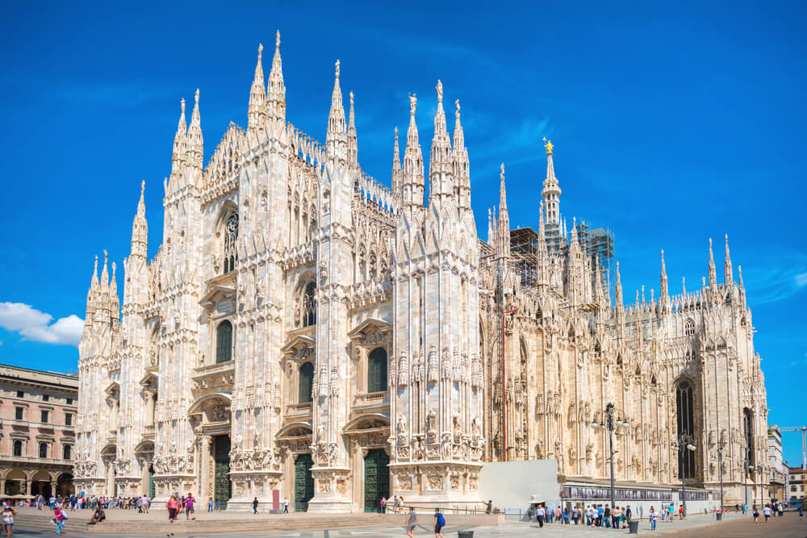

La construcción del Duomo de Milán inició en 1386 y terminó en 1965 y se llevó a cabo en el mismo lugar donde se encontraba desde el siglo V la Basílica de San Ambrosio a la que se agregó, en el año 836, la Basílica de Santa Tecla y que fueron destruidas por un incendio en el 1075. La construcción de la Catedral de Milán dio inicio bajo el mandado de Gian Galeazzo Visconti con el objetivo de renovar el área y celebrar la política de expansión territorial de los Visconti. La construcción de la catedral se realizó en un período de cinco siglos durante los cuales, diferentes arquitectos, escultores y artistas aportaron su contribución profesional en la famosa “Fabbrica del Duomo” (Fabrica de la Catedral) que era una institución integrada por 300 empleados liderados por el arquitecto Simone da Orsenigo. Galeazzo concedió a la Fabbrica el uso exclusivo del mármol de la cantera de Candoglia y la exoneró del pago de impuestos. En 1389, el francés Nicolás de Bonaventure, fue designado arquitecto jefe dando a la catedral una fuerte impronta gótica. Así, el exterior de la Catedral se encuentra revestido de mármol blanco rosado al igual que la parte superior que culmina con una infinidad de pináculos y torres coronadas por estatuas que contemplan la ciudad. Giuseppe Perego esculpió una estatua de cobre dorado en 1774 que fue ubicada en el punto más alto del templo y que es conocida como la Madonnina que se convirtió en el símbolo de Milán. Este impresionante proyecto dio como resultado una obra arquitectónica única, que fusiona el estilo gótico internacional con la arquitectura tradicional lombarda.
 